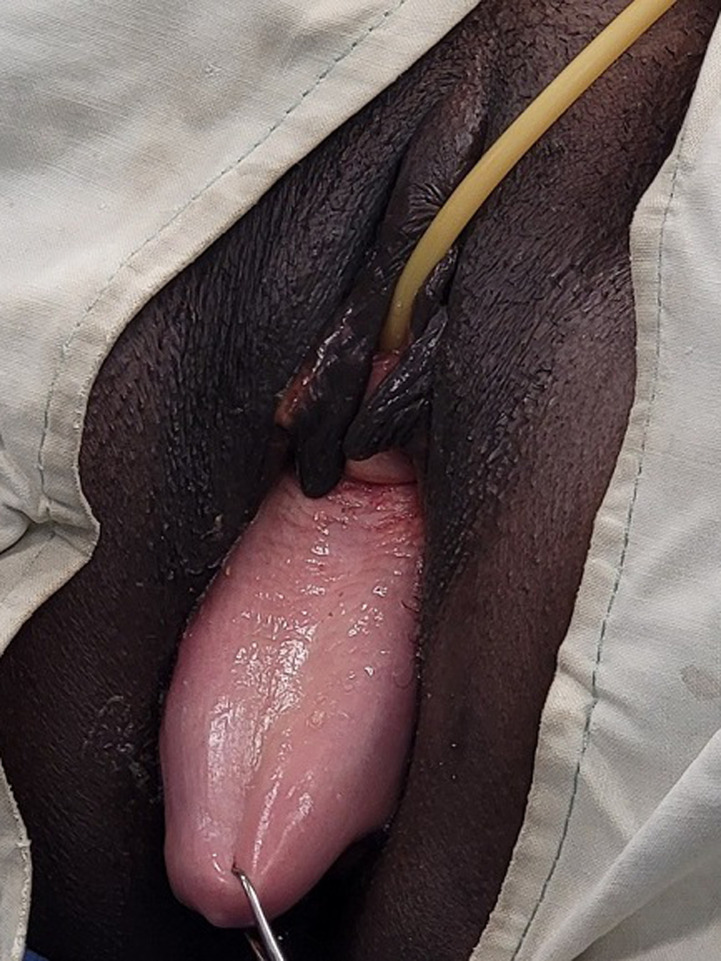

Página 7 · Prolapsos / distopia genital
Cistocele: lateral com rugas, central lisa — e por que também perde na tosse
Paravaginal (lateral)
Mantém as rugas da mucosa — falha lateral; ~80% dos casos; corrige-se reancorando na fáscia pubovesicocervical. E é a que também perde urina no esforço.
Central
Uma bola lisa, sem rugas — a fáscia central se distendeu; é a que Kelly-Kennedy resolve.
80% é defeito lateral (paravaginal) — e ele mantém as rugas
Recapitulando o compartimento anterior: o prolapso vaginal anterior é a cistocele, a bexiga que desce. Mas a cistocele tem dois defeitos possíveis, e a proporção importa: cerca de 80% é por defeito lateral (paravaginal). E há uma assinatura visual — o defeito paravaginal mantém a rugosidade da mucosa. A parede vaginal continua com as rugas normais, porque o que falhou foi a ancoragem lateral (o destacamento do arco tendíneo), não a fáscia central. É o detalhe técnico que a questão detalhista cobra.
Por que o paravaginal também perde urina: o link com a incontinência de esforço
O defeito paravaginal é o de maior associação com incontinência de esforço. A razão: a bexiga deslocada mexe com o mecanismo da continência — o mesmo aparelho que segura a urina no esforço. Aqui a discussão apenas cita e linka: como se perde urina no esforço é assunto próprio da incontinência (a discussão vizinha é a dona desse mecanismo); o que interessa na cistocele é reconhecer que a cistocele paravaginal e a perda urinária de esforço andam juntas.
O defeito central: a bola lisa, sem rugosidades
O outro defeito é o central, e ele tem a assinatura oposta: fica liso. Uma bola lisa, sem as rugosidades normais da mucosa, porque o que atenuou foi a fáscia central (a parede se distende e apaga as rugas). Rugosa é paravaginal; lisa é central — a mucosa entrega o tipo antes de qualquer manobra.
Colporrafia anterior (colpoperineoplastia): a correção que também fecha o períneo
A correção da cistocele é a colporrafia anterior, também chamada colpoperineoplastia anterior. O nome duplo tem razão: aproveita-se o mesmo tempo cirúrgico para fechar um pouco o períneo quando ele está muito alargado (o alargamento perineal atrapalha a vida sexual), melhorando também a parte sexual. Uma cirurgia que corrige a parede e, de quebra, restaura o períneo.
Kelly-Kennedy só no central; no paravaginal, reinserir na fáscia pubovesicocervical
A técnica de Kelly-Kennedy (plicatura mediana) ajuda a cistocele só se o defeito for central — ela aproxima na linha média o que se atenuou no centro. No defeito paravaginal, Kelly-Kennedy não resolve, porque o problema é lateral: aí é preciso reinserir na fáscia pubovesicocervical — a fáscia que sustenta a bexiga prendendo-a ao púbis —, refazendo a ancoragem lateral na parede vaginal. Central se plica; lateral se reancora — a técnica segue o defeito.
A tela só na recidiva — nunca primeira linha
A tela entra apenas em caso de recidiva — não é primeira linha de forma alguma. Veio como uma promessa grande, mas pode dar extrusão e causar dor, e por isso recuou: hoje se reserva para o prolapso que voltou depois da correção com tecido nativo.

A parede anterior protrui pelo introito conservando as pregas mucosas sobre o abaulamento — a assinatura do defeito paravaginal (lateral), que reancora na fáscia pubovesicocervical (Kelly não resolve). Nesta paciente há também ptose uterina associada — não é, portanto, defeito paravaginal isolado.
Ilunga-Mbaya E et al. “Clinical features and natural history of pelvic organ prolapse in South Kivu.” Pan Afr Med J. 2025;51:48 (Fig. 1). Licenciado sob CC BY 4.0. Fonte: PMC.
real de achado — rugas preservadas (lateral); ptose uterina coexiste, não isoladoMapa do assoalhoHidrata a coluna anterior do mapa: a fáscia pubovesicocervical é o suporte da bexiga — a mesma que se reancora no defeito paravaginal.
Quiz — fixação
Cistocele com a mucosa vaginal mantendo as rugas normais. Sobre o defeito e a correção:
- B — a virada. Rugas mantidas = defeito paravaginal (lateral), o mais comum (~80%) → corrige-se reancorando na fáscia pubovesicocervical, não plicando o centro.
- A. troca o tipo: rugosa não é central, e Kelly-Kennedy só serve ao central.
- C. acerta a fáscia mas erra o tipo (chama de central) — incoerente.
- D. falso: a cistocele lisa é o defeito central, não “toda cistocele”.
- Por que cair. o aluno decora “Kelly-Kennedy = cistocele” sem a ressalva “só central”, e a rugosidade é justamente o sinal que veta Kelly.
Por que a cistocele por defeito paravaginal se associa mais à incontinência de esforço?
- B — a virada. O deslocamento da bexiga no defeito lateral mexe com o mecanismo da continência — daí a maior associação com perda no esforço.
- A. extrusão de tela é complicação de recidiva, não a causa da associação.
- C. confunde compartimentos: o central anterior não comprime o reto (isso é posterior).
- D. a colporrafia posterior é do reto/retocele — nada a ver com a cistocele anterior.
- Por que cair. misturar “central” da cistocele com estruturas posteriores é o tipo de troca de andar que a topografia resolve.
Sobre a tela na correção da cistocele, é correto:
- B — a virada. A tela é de recidiva, nunca 1ª linha, justamente por extrusão/dor.
- A. inverte a diretriz — “durável” não a promove a 1ª linha diante do risco.
- C. a colporrafia com tecido nativo é a 1ª linha; a tela não a substitui de rotina.
- D. o paravaginal se corrige por reinserção na fáscia, não por tela obrigatória.
- Por que cair. a tela “veio como promessa grande”, e é fácil lembrar da promessa e esquecer o recuo.
Trocado o andar da frente pelo de trás, aparece a distinção que mais se insiste em não confundir: as duas bolas da parede posterior — uma é o reto, a outra é uma hérnia de intestino.